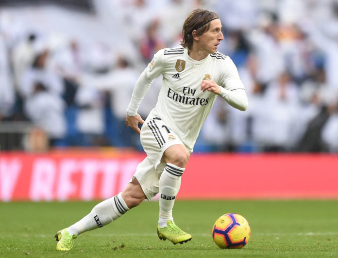

Welcome to my page
Have a wondeful stay and hope you enjoy the content of this page.
Thank you...
About Myself
 Picture of Myself
Picture of Myself
My name is Simon Kwesi Bonney. Most people like to call me Paa Kwesi. I grew up as the last born of seven children of my parents. I'm from Sekondi-Takoradi, Western part of Ghana. I was born and grew up in Accra. Currently I reside at Coco Beach, Nungua-Accra. I started my basic education at St.Peter's Anglican School, Nungua and continued with Senior High School education at the same School. Accustomed to teaching and always playing with any PC or Gaming Devices I came into contact with, I dream of becoming a Teacher and a Developer or Programmer in future. When I was growing up, I would watch football matches and play video games with my brothers. I've loved it ever since.
My Favorite Football Team
 Real Madrid Players
Real Madrid Players
Real Madrid Club de Fútbal, meaning Royal Madrid Football Club, commonly referred to as Real Madrid, is a Spanish professional football club based in Madrid.Nicknamed; Los Blancos (The Whites), Los Merengues (The Meringues), Los Vikingos (The Vikings), La Casa Blanca (The White House), was founded on 6 March 1902 as the Madrid Football Club, the club has traditionally worn a white home kit since inception. The word real is a Spanish for "royal" and was bestowed to the club by King Alfonso Xill in 1920 together with the royal crown in the emblem. The team has played its home matches in the 81,044-capacity Santiago Bernabéu Stadium in downtown Madrid sice 1947. Talk of Honours, the club has won; 33 La Liga, 19 Copa del Rey, 10 Supercopa de Espana, 1 Copa Eva Duarte, 1 Copa de la Liga, 13 UEFA Champions League, 2 UEFA Cup, 4 UEFA Super Cup, 3 Intercontinental Cup and 4 FIFA Club World Cup.
 Santiago Bernabéu Stadium
Santiago Bernabéu Stadium
My Favorite Football Player
Luka ModricLuka Modrić, born on 9 September 1985, is a Croatian professional footballer who plays as a midfielder for Spanish club Real Madrid and is the captain of the Croatia national team. Modrić plays mainly as a central midfielder but can also play as a defensive midfielder, usually deployed as a deep-lying playmaker. Modrić is widely regarded as one of the best midfielders of his generation, and the Greatest Croatian footballer of all-time. Modrić married Vanja Bosnić in May 2010 in the Croatian capital Zegreb in a private ceremony after four years of dating, and a year later in church. They have two daughters, name; Ema and Sofia and a son called Ivano. Modrić has many Honours individually, with Croatian National Team and Club Football, including winning the FIFA Best Player of the Year 2018 and the Ballon d'or.